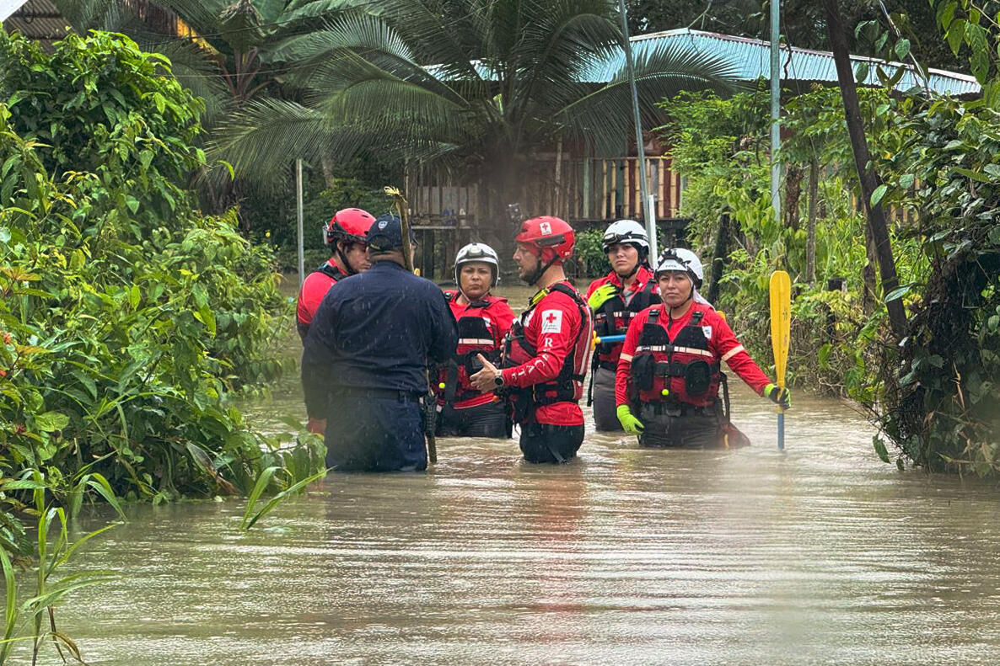

Ya son 114 los centros educativos afectados por fuertes lluvias en el Caribe.

Fenómeno de El Niño aumenta riesgos de sequías en Guanacaste.

Tormenta tropical deja comunidades incomunicadas en el Pacífico Sur.

Estudio alerta sobre el impacto del cambio climático en el Valle Central.

Emergencia climática: Más de 300 familias afectadas por deslizamientos.

Autoridades intensifican preparativos ante lluvias en la Zona Norte.